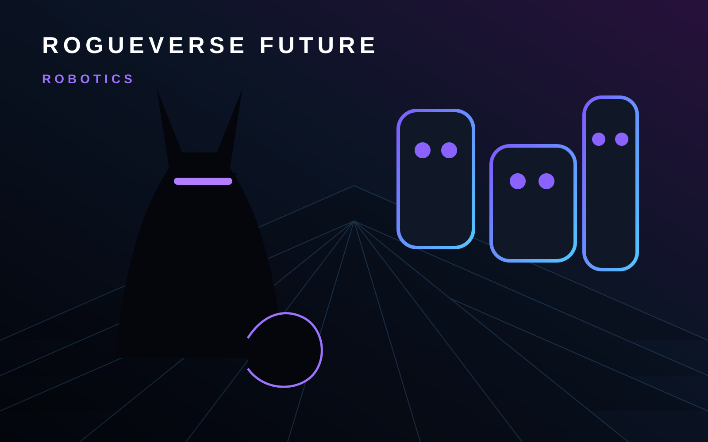

ROGUEVERSE FUTURE · ROBOTICS
Robotics Is What Happens When Software Gets a Body
The machine is only half the story. The real challenge is building systems that can sense, decide and act reliably in environments that refuse to behave like controlled demos.

Robotics sits at the intersection of hardware, software, artificial intelligence and the physical world. A robot has to do more than calculate the right action. It has to perform that action while dealing with friction, weight, obstacles, people, imperfect sensors and environments that constantly change.
That is why robotics often advances differently from purely digital technology. A software update can be deployed in seconds. A machine that moves through a warehouse, home, hospital or factory has to survive reality.
Embodied intelligence
Modern robotics increasingly combines perception systems with software that can interpret a goal and adjust to changing conditions. That opens the door to machines that are more flexible than traditional industrial equipment, but flexibility also creates new safety and reliability questions.
Humanoid robots attract attention because they can potentially operate in spaces designed around human bodies. They are not the only important robots, though. Logistics systems, drones, assistive devices, manufacturing machines and specialized autonomous platforms may prove just as transformative.
The prove-it stage
A compelling demonstration is not the same thing as a dependable product. RogueVerse Future will pay particular attention to endurance, maintenance, energy use, cost, real deployment and the gap between carefully staged demonstrations and daily operation.
The most important robotics stories may be less cinematic than the flashiest prototypes. A machine that reliably saves workers from repetitive strain, helps move materials safely or gives someone greater independence can matter more than a robot that looks human for thirty seconds onstage.
What RogueVerse is watching
We will follow humanoid systems, industrial automation, assistive robotics, drones, machine vision and the policies that shape how autonomous equipment can be deployed around people.
The central question is simple: when software begins moving through the physical world, can it earn the level of trust required to share that world with us?
RogueVerse Future Primer · This page defines the Robotics coverage lane and will connect to reporting, analysis and deeper features as they are published.